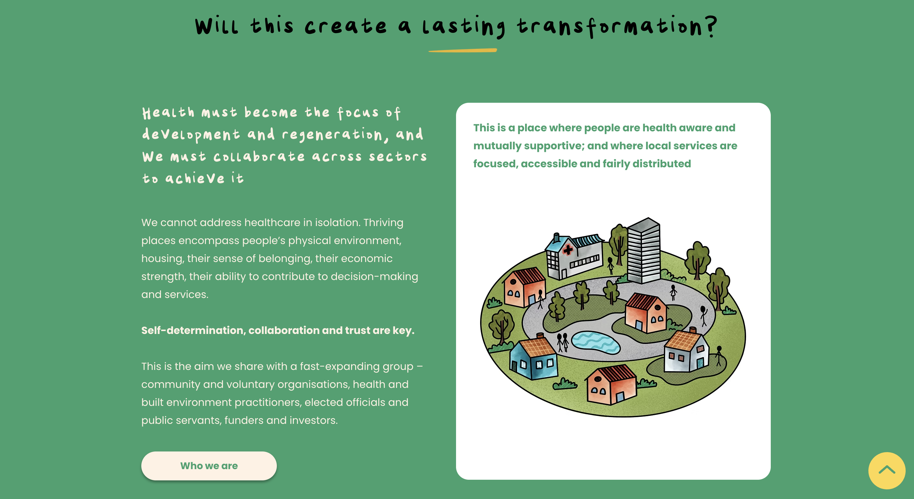

The Challenge
How might communities lead in the delivery of healthier places and shape it?
Current healthcare in the UK relies on top-down, often disjointed delivery experienced by many as impersonal, slow and unequal. The Government's 10-year plan for a neighbourhood health service proposes a fundamental shift: from centralised, hospital-dependent care to localised provision focused on prevention, with people taking greater responsibility for their own health.
But this shift will only succeed if it leverages the capabilities, resources and networks that already exist within communities. The challenge Footwork Trust set out to address was both an evidential and a design one: how do you make the case (compellingly and credibly) that local people have the knowledge, motivation and capacity to promote wellbeing and shape neighbourhood health services?
"We need to think about health and wellbeing as something that we make rather than something that is done to us."
Communities for Health — core principleMy Approach
Research, synthesis and strategic communication: at national scale
Working at Footwork Trust, I led the design and delivery of Communities for Health, a strategic design research project that mapped and analysed community-led health innovation projects across the UK to generate a compelling policy evidence base.
The work involved extensive landscape analysis of existing community health initiatives — from rural Somerset to urban Manchester — identifying what works, under what conditions, and why. This was combined with stakeholder engagement across a wide range of sectors: community and voluntary organisations, health practitioners, built environment professionals, elected officials, funders and investors.
A key design challenge was translating this complexity into a framework that could communicate across audiences — accessible enough for community members, rigorous enough for policymakers, and compelling enough to shift thinking at a strategic level.
The Framework
A virtuous circle — with people at its core
The framework is expressed as a wheel, built outward in five layers — each one adding a dimension of how community contribution to health can be understood, enabled and sustained. It draws on evidence collected across community-led innovation, health prevention and delivery, the built environment and investment.
Click through each layer below to explore how the framework was built and what each layer means in practice.
What I Did
A framework, a website, and an evidence base that moves decisions forward
The central output of the project is the Communities for Health framework- a virtuous circle with people at its core, mapping three interlocking domains of community contribution to health: Organisation (agency, capacity, implementation), Health (prevention and promotion, service take-up, responsive services), and Space and Place (housing, urban and open spaces, economy).
I designed and produced the public-facing website — communitiesforhealth.co.uk — as the primary communication vehicle for the research. The site presents the full framework, evidenced with active examples from across the UK showing how each aspect of community capacity is already being harnessed and delivered. It is designed to be a living resource for practitioners, policymakers and community leaders.
I also applied iterative feedback loops with health innovators and policymakers to continuously improve clarity and buy-in.

Snapshot from the live website
Outcomes & Impact
Policy evidence that makes the case for community-led health at national scale
Communities for Health produced a publicly available, policy-grade evidence base demonstrating the range and potential impact of community involvement in health across the UK. The framework is evidenced with active examples spanning nine categories, from peer-to-peer support and improved service take-up, to trusted partnerships between users and providers and innovations in housing and open space.
The project directly supports the Government's neighbourhood health agenda, providing the evidential foundation that policymakers, Integrated Care Boards and local authorities need to make the case for investing in community-led approaches. The website serves as an ongoing resource for a fast-expanding group of practitioners, funders and elected officials.
Project output
A public-facing website and policy evidence framework — communitiesforhealth.co.uk — making the case that local people have the knowledge, motivation and capacity to promote wellbeing and shape neighbourhood health services. Live and actively used by practitioners and policymakers across the UK.
What I learned
This project showed me that service design at a policy level requires a different kind of communication than service design at a community level. The framework had to be rigorous enough to withstand scrutiny from policymakers, accessible enough for community organisations, and compelling enough to shift how people think about the relationship between communities and health systems.
It also reinforced my conviction that the most powerful design artefacts are ones that make an argument. The Communities for Health framework takes a position: that community-led health is not a nice-to-have but a strategic necessity. Designing something that advocates clearly while remaining evidentially grounded was genuinely rewardijg.
If I were doing this again: I would build more direct community voice into the website itself. Not just examples of community projects, but the words of community members describing their own experience. The framework is strong, but the human stories would make it land harder.
Live Output
Visit communitiesforhealth.co.uk →